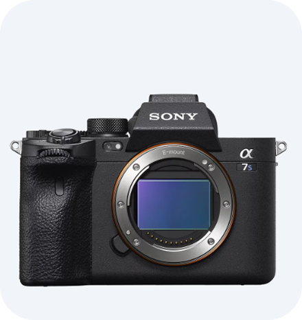

라인업
인터랙티브
핵심기술
악세서리

빛나는 또 한번의 진화
α7S III는 1200만 화소 센서와 빠른 AF, 4K 120p 촬영으로
저조도 환경에 강한 영상 제작자용 카메라입니다.
해상도
연속 촬영 속도
프로세서 & 이미지 처리 엔진
연속 촬영 부스트
손떨림 보정
배터리 성능
12.1MP
최대 10fps
Dual BIONZ XR 프로세서 탑
순간 속도 조절 기능 없음
최대 5.5스톱 5축 IBIS 내장
CIPA 기준 약 600장 이상
(LCD 기준)